신재생에너지발전설비기사(구) (2018-09-15 기출문제)
1과목: 임의 구분
1. 축전지 충전방식 중 자기방전량만을 항상 충전하는 충전방식은?
- 보통충전
- 급속충전
- 부동충전
- 세류충전
(정답률: 71%)

2. 태양광발전용 인버터의 회로방식으로 적당하지 않은 것은?
- 트랜스리스 방식
- 단권 변압기 절연방식
- 고주파 변압기 절연방식
- 상용주파 변압기 절연방식
(정답률: 79%)
3. 인버터 데이터 중 모니터링 화면에 전송되는 것이 아닌 것은?
- 발전량
- 일사량, 온도
- 입력전압, 전류, 전력
- 출력전압, 전류, 전력
(정답률: 73%)
4. PN접합 다이오드에 대한 설명 중 틀린 것은?
- 외부에서 바이어스를 가하지 않으면 확산전류와 드리프트전류의 크기는 동일하다.
- P영역의 정공은 확산(diffusion)에 의해 N영역으로 이동한다.
- N영역의 전자는 드리프트(drift)에 의해 P영역으로 이동한다.
- 공핍층(depletion layer)에서만 전기장이 존재한다.
(정답률: 49%)
5. 다음 중 발전방식에 의한 이산화탄소 배출량으로 옳은 것은? (단, 생산규모 100MW, 상정수명이 20년으로 가정한다.)
- 다결정 실리콘 40~45g-CO2/kWh
- 다결정 실리콘 60~80g-CO2/kWh
- 아몰퍼스 실리콘 5~10g-CO2/kWh
- 아몰퍼스 실리콘 100~150g-CO2/kWh
(정답률: 49%)
6. 면적이 250cm2이고 변환효율이 20%인 결정질 실리콘 태양전지의 표준조건에서의 출력은?
- 0.4W
- 0.5W
- 4W
- 5W
(정답률: 63%)
7. 태양전지 제조 과정 중 표면 조직화에 대한 설명 중 틀린 것은?
- 표면 조직화는 표면 반사손실을 줄이거나 입사경로를 증가 시킬 목적이다.
- 표면 조직화는 광 흡수율을 높여 단락전류를 높이기 위함이다.
- 태양전지의 표면을 피라미드 또는 요철구조로 형성화하는 방법이다.
- 표면 조직화는 태양전지의 곡선인자 값을 향상시키게 된다.
(정답률: 62%)
8. 태양광발전 시스템에서 추적제어방식에 따른 분류가 아닌 것은?
- 프로그램 추적법(program tracking)
- 감지식 추적법(sensor tracking)
- 양방향 추적법(double tracking)
- 혼합식 추적법(mixed tracking)
(정답률: 75%)
9. 독립형 태양광발전 설비용 인버터의 필요한 조건 중 틀린 것은?
- 출력 쪽 단락 손상에 대한 보호
- 축전지 전압 변동에 대한 내성
- 교류측으로 직류의 역류 기능
- 급상승 전압 보호
(정답률: 75%)
10. 축전지 설비의 설치기준에서 큐비클식 축전기 설비 이외의 발전설비와의 사이 이격거리(m)는?
- 0.5
- 1.0
- 1.5
- 2.0
(정답률: 71%)
11. 태양광발전 경사각에 대한 설명으로 가장 거리가 먼 것은?
- 적도지방의 경사각은 0°일 때 가장 효율적이다.
- 우리나라의 경우 중부지방은 경사각이 37°일 때 가장 효율적이다.
- 태양광 모듈과 지표면이 이루는 각도를 말한다.
- 최적의 경사각은 그 지역의 위도와 관계없이 항상 90°일 때이다.
(정답률: 81%)
12. 회로에서 입력전압 24V, 스위칭 주기 50㎲, 듀티비 0.6, 부하저항이 10Ω일 때, 출력전압 VO는 몇 V인가? (단, 인덕터의 전류는 일정하고, 커패시터의 C는 출력전압의 리플 성분을 무시할 수 있을 정도로 매우 크다.)
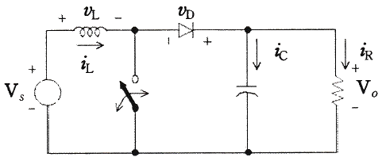
- 20
- 40
- 60
- 80
(정답률: 62%)
13. 다음 중 신·재생에너지의 분류에 해당되지 않는 것은?
- 태양열
- 원자력발전
- 바이오에너지
- 해양에너지
(정답률: 88%)
14. 태양광 발전 시스템용 축전지(batter)로 사용되지 않는 것은?
- 니켈-카드뮴
- 니켈-수소
- 리튬이온
- 망간
(정답률: 75%)
15. 계통연계형 태양광발전시스템에서 축전지의 용량산출 일반식으로 옳은 것은? (단, C : 축전지의 표시용량, K : 방전시간, 축전지온도, 허용최저전압으로 결정되는 용량환산 시간, I : 평균방전전류, L : 보수율(수명말기의 용량 감소율))
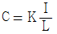
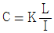
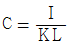
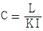
(정답률: 77%)
16. 파장이 546㎚인 광자의 에너지를 전자볼트의 단위로 환산했을 때 옳은 것은?
- 2.28eV
- 3.28eV
- 3.62eV
- 4.14eV
(정답률: 50%)
17. 태양전지의 특징에 대하여 설명한 내용 중 옳은 것을 [보기]에서 찾아 모두 나열한 것은?
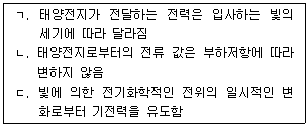
- ㄱ
- ㄱ, ㄴ
- ㄱ, ㄷ
- ㄴ, ㄷ
(정답률: 78%)
18. 태양광 발전용 PCS의 회로방식 중 소형·경량으로 회로가 복잡하고 고효율화를 위한 특별한 기술이 요구되는 회로방식은?
- 상용주파 절연방식
- 고주파 절연방식
- 무변압기방식
- 전류 절연방식
(정답률: 61%)
19. 다음 중 수직축 풍차가 아닌 것은?
- 사보니우스 풍차
- 프로펠러형 풍차
- 크로스플로 풍차
- 다리우스 풍차
(정답률: 69%)
20. 결정계 실리콘 태양전지 모듈에서 표면온도와 발전출력과의 일반적인 관계는?
- 표면온도가 높아지면 발전출력이 증가한다.
- 표면온도가 높아지면 발전출력이 감소한다.
- 표면온도가 낮아지면 발전출력이 감소한다.
- 표면온도가 변화가 발전출력에는 영향이 없다.
(정답률: 84%)
2과목: 임의 구분
21. 모니터링시스템 주요 구성 요소가 아닌 것은?
- 발전소내 감시용 CCTV
- LOCAL 및 Web Monitoring
- 기상관측 장치
- LBS
(정답률: 72%)
22. 태양광발전시스템과 전력계통선과의 연계를 위한 송·수전설비에서 중요한 송전용 변압기의 용량산정에 고려사항이 아닌 것은?
- DC 케이블의 굵기 선정
- 변압기 효율과 부하율의 관계
- 변압기 뱅크방식에 따른 송전방식
- 적정 변압기의 결선방식 선정
(정답률: 67%)
23. 태양광 발전 사업 추진 절차내용과 관련기관이 틀린 것은?
- 사용 전 검사 - 한국전력공사
- 대상 설비 확인 - 공급인증기관
- 전력수급계약 체결 - 전력거래소
- 사업 개시 신고 – 산업통상자원부 장관
(정답률: 67%)
24. 다음 중 수직하중에 해당하지 않는 것은?
- 적설하중
- 고정하중
- 활하중
- 풍하중
(정답률: 69%)
25. 에어(AM : Air Mass)의 뜻으로 옳은 것은?
- 지구대기에 입사한 태양광의 입사 각도
- 지구대기에 입사한 태양광과 대기 분포의 비
- 지구대기에 임의의 측정 위치의 지구 대기 질량
- 지구대기에 입사한 태양광이 통과한 대기노정의 길이
(정답률: 48%)
26. 태양광 발전사업 허가기준에 대한 설명이다. 다음 중 허가기준에 맞지 않은 것은?
- 전기사업 수행에 필요한 재무능력 및 기술능력이 있을 것
- 전기사업이 계획대로 수행될 수 있을 것
- 일정지역에 편중되어 전력계통의 운영에 지장을 초래해서는 아니 될 것
- 태양광 발전사업 허가신청 시 환경영향평가를 반드시 2회 받아야 될 것
(정답률: 77%)
27. 피뢰시스템의 보호각법에서 Ⅱ레벨의 회전구체 반경 r(m)의 최대값은?
- 10
- 20
- 30
- 45
(정답률: 60%)
28. 적설량이 많은 지역에서의 태양전지 어레이의 설계 경사각으로 가장 적절한 각은?
- 5°
- 15°
- 45°
- 90°
(정답률: 73%)
29. 다음의 조건에서 독립형 태양광발전시스템의 축전지 용량(Ah)은?(오류 신고가 접수된 문제입니다. 반드시 정답과 해설을 확인하시기 바랍니다.)
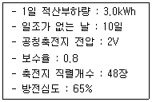
- 601
- 751
- 941
- 451
(정답률: 58%)
30. 가대설계 시 적용하는 하중으로 가장 거리가 먼 것은?
- 적설 하중
- 우천 하중
- 지진 하중
- 풍압 하중
(정답률: 67%)
31. 연차별 총비용 대비 연차별 총편익의 비를 토대로 사업의 타당성을 판단하는 경제성 분석 모형은?
- 순현재가치법(NPN)
- 비용편익비 분석(CBR)
- 내부수익률(IRR)
- 자본회수기간법(PPM)
(정답률: 59%)
32. 어레이 설계 시 어레이 구조 결정의 기술적 측면에서의 고려 사항으로 틀린 것은?
- 구조 안정성
- 환경영향평가 검토
- 풍속, 풍압, 지진 고려
- 건축물과의 결합(기초)방법 결정
(정답률: 71%)
33. 태양광 발전설비 설치 시 반드시 필요한 설계도서에 해당되지 않는 것은?
- 배치도
- 평면도
- 시방서
- 계획서
(정답률: 53%)
34. 태양광 발전설비를 뇌격으로부터 보호하기 위한 과전압 보호장치(SPD : Surge Protection Device) 설치 및 접지방식에서 그림 중에서 가장 적절한 방식은?
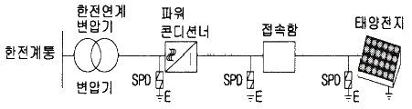
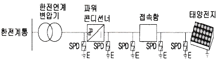
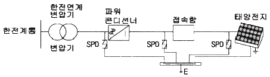
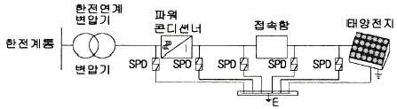
(정답률: 60%)
35. 태양전지간의 배선 또는 태양전지 모듈과 접속함, 파워컨디셔너 간의 배선이 갖추어야 될 특성으로 볼 수 없는 것은?
- 최대 내영온도 범위는 –40℃~90℃
- 최소 곡률반경은 도선 지름의 3~4배
- 절연체 재질로는 XLPE, 외피에는 난연성 PVC 사용
- 회로의 단락전류에 견딜 수 있는 굵기의 케이블을 선정
(정답률: 63%)
36. 태양광 모듈 설치 시 태양을 향한 방향에 높이 5m인 장애물이 있을 경우 장애물로부터 최소 이격거리(m)는? (단, 발전가능 한계시각에서의 태양의 고도각은 15°이다.)
- 약 8.2
- 약 10.5
- 약 15.6
- 약 18.7
(정답률: 48%)
37. 태양전지의 기초종류와 적용 목적이 올바르게 설명된 것은?
- 말뚝기초 : 철탑 등의 기초에 자주 사용
- 직접기초 : 지지층이 얕을 경우 사용
- 연속기초 : 하천 내의 교량 등에 사용
- 주춧돌 기초 : 지지층이 깊을 경우 사용
(정답률: 70%)
38. 유리계면에 태양광 에너지가 60°로 입사될 경우 태양광 에너지의 반사율은 얼마인가? (단, 굴절률은 공기 : 1, 유리 : 1.526)
- 0.063
- 0.073
- 0.083
- 0.093
(정답률: 30%)
39. 태양광발전설비 부지를 선정할 때 틀린 것은?
- 일조량이 많아야 한다.
- 일조시간이 길어야 한다.
- 적설량이 적어야 한다.
- 음영이 많아야 한다.
(정답률: 82%)
40. 설계도서 적용 시 고려사항이 아닌 것은?
- 숫자로 나타낸 치수는 도면상 축척으로 잰 치수보다 우선한다.
- 특기시방서는 당해 공사에 한하여 일반시방서에 우선하여 적용한다.
- 공사계약문서 상호간에 문제가 있을 때는 감리에 의하여 최종적으로 결정한다.
- 설계도면 및 시방서의 어느 한쪽에 기재되어 있는 것은 그 양쪽에 기재되어 있는 사항과 완전히 동일하게 다룬다.
(정답률: 52%)
3과목: 임의 구분
41. 화재 발생 시 다른 설비로 불길 확산 방지를 위한 방화구획 관통부의 처리방법 중, 배선을 옥외에서 옥내로 끌어들인 관통부분 처리방법에서 관통부분의 충전재 등이 가져야 할 성질은 무엇인가?
- 내열성, 냉방성
- 가요성, 내후성
- 난연성, 내후성
- 난연성, 내열성
(정답률: 75%)
42. 감리원은 공사업자 등이 제출한 시설물의 유지관리지침 자료를 검토하여 공사 준공 후 며칠 이내에 발주자에게 제출하여야 하는가?
- 7일
- 14일
- 20일
- 30일
(정답률: 56%)
43. 설계 감리원의 설계도면 적정성 검토 사항으로 옳지 않은 것은?
- 도면 작성이 법률적 근거를 제시하였는지 여부
- 설계 입력 자료가 도면에 맞게 표시되었는지 여부
- 설계결과물(도면)이 입력자료와 비교해서 합리적으로 표기되었는지 여부
- 도면이 적정하게, 해석 가능하게, 실시 가능하며 지속성 있게 표현되었는지 여부
(정답률: 62%)
44. 접지극으로 사용 가능한 규격으로 적합하지 않은 것은?
- 동판을 사용하는 경우는 두께 0.6mm이상, 면적 800cm2 편면 이상의 것
- 동봉, 동피복강봉을 사용하는 경우는 지름 8mm이상, 길이 0.9m 이상의 것
- 탄소피복강봉을 사용하는 경우는 지름 8mm이상의 강심이고 길이 0.9m 이상의 것
- 동복강판 사용하는 경우는 두께 1.6mm이상, 길이 0.9m, 면적 250cm2 편면 이상의 것
(정답률: 52%)
45. 지붕에 설치하는 태양광 발전 형태로 볼 수 있는 것은?
- 창재형
- 차양형
- 난간형
- 톱라이트형
(정답률: 64%)
46. 변압기의 Y-Y 결선방식의 특징이 아닌 것은?
- 기전력 파형은 제3고조파를 포함한 왜형파가 된다.
- 중성점을 접지할 수 있으므로 단절연방식을 채택할 수 없다.
- 상전압은 선간전압의 1/√3 이 되어 고전압의 결선에 적용된다.
- 변압비, 임피던스가 서로 틀려도 순환전류가 흐르지 않는다.
(정답률: 52%)
47. 접속반 설치공사 중 고려사항이 아닌 것은?
- 접속함 설치 위치는 어레이 근처가 적합하다.
- 외함의 재질은 가급적 SUS304 재질로 제작 설치한다.
- 접속함은 풍합 및 설계하중에 견디고 방수, 방부형으로 제작한다.
- 역류 방지 다이오드의 용량은 모듈 단락전류의 4배 이상으로 한다.
(정답률: 77%)
48. 태양광전지 모듈과 접속함 간의 배선공사를 금속덕트로 시공할 경우 금속덕트에 넣은 전선의 단면적의 합계는 덕트 내부 단면적의 몇 % 이하로 하여야 하는가? (단, 전선의 단면적은 절연피복을 포함한다.)
- 50
- 40
- 30
- 20
(정답률: 60%)
49. 공사업자가 감리원에게 제출하는 시공계획서에 포함되지 않는 것은?
- 시공기준 내역서
- 공사 세부공정표
- 주요 장비 동원계획
- 주요 기자재 및 인력투입 계획
(정답률: 40%)
50. 태양광 발전시스템의 시공절차 중 간선공사 순서가 올바른 것은?
- 모듈 → 어레이 → 접속반 → 인버터 → 계통간선
- 모듈 → 인버터 → 어레이 → 접속반 → 계통간선
- 어레이 → 모듈 → 인버터 → 접속반 → 계통간선
- 모듈 → 인버터 → 접속반 → 어레이 → 계통간선
(정답률: 73%)
51. 태양광 발전시스템 시공시 원칙적인 안전 대책이 아닌 것은?
- 절연장갑을 사용한다.
- 절연처리된 공구를 사용한다.
- 작업전 태양전지 모듈 표면에 차광막을 씌워 태양전지의 출력을 막는다.
- 강우시 안전에 유의하면서 작업을 진행한다.
(정답률: 72%)
52. 전압변동에 의한 플리커 현상의 경감대책에 대한 설명으로 가장 옳지 않은 것은?
- 전원 계통에 리액터분을 보상하는 방법은 직렬콘덴서 방식이 있다.
- 전압 강하를 보상하는 방법은 상호 보상 리액터 방식이 있다.
- 부하와 무효전력 변동분을 흡수하는 방식은 사이리스터 이용 콘덴서 개폐 방식이 있다.
- 플리커 부하 전류의 변동분을 억제하는 방식은 병렬리액터 방식이 있다.
(정답률: 52%)
53. 태양광 전지의 사용 전 검사의 세부내용이 아닌 것은?
- 외관검사
- 어레이 접지상태 확인
- 전지 전기적 특성시험
- 제어회로 및 경보시험
(정답률: 54%)
54. 접지공사 시공 방법에 관한 설명으로 가장 옳지 않은 것은?(관련 규정 개정전 문제로 여기서는 기존 정답인 3번을 누르면 정답 처리됩니다. 자세한 내용은 해설을 참고하세요.)
- 제3종 접지공사는 접지저항 값을 100Ω 이하로 한다.
- 제1종 및 특별 제3종 접지공사의 접지저항 값은 10Ω 이하로 한다.
- 태양전지에서 인버터까지의 직류전로(어레이주회로)에는 특별 제3종 접지공사를 한다.
- 제2종 접지공사는 변압기의 고압측 혹은 특별고압측 전로의 1선 지락전류의 암페어 수로 150을 나눈 값과 같은 접지저항 값 이하로 한다.
(정답률: 68%)
55. 서지 보호를 위해 SPD 설치 시 접속도체의 길이는 몇 m 이하가 되도록 하여야 하는가?
- 0.3
- 0.5
- 0.8
- 1.0
(정답률: 57%)
56. 건축물에 태양광발전 설치방식 중 개구부의 블라인드 기능을 보유하고, 건축의 디자인을 손상시키지 않고 설치할 수 있는 방식은?
- 창재형
- 차양형
- 난간형
- 루버형
(정답률: 57%)
57. 감리업자는 감리용역 착수 시 착수신고서를 제출하여 발주자의 승인을 받아야 한다. 착수신고서에 포함되지 않는 서류는?
- 공사예정 공정표
- 감리비 산출내역서
- 감리업무 수행계획서
- 상주, 비상주 감리원 배치계획서
(정답률: 45%)
58. 특기시방서에 대한 설명으로 알맞은 것은?
- 일반적인 기술 사항을 규정한 시방서
- 특정공사를 위해 일반사항을 규정한 시방서
- 공사 전반에 걸쳐 기술적인 사항을 규정한 시방서
- 특정자재의 종류, 유형, 치수, 설치방법, 시험 및 검사항목 등을 명시한 시방서
(정답률: 57%)
59. 태양전지 모듈의 배선이 끝나고 전기와 관련된 검사 항목이 아닌 것은?
- 극성 확인
- 전압 확인
- 주파수 확인
- 단락전류 확인
(정답률: 67%)
60. 송전선로의 선로정수가 아닌 것은?
- 저항
- 정전용량
- 리액턴스
- 누설컨덕턴스
(정답률: 51%)
4과목: 임의 구분
61. 소형 태양광 인버터의 교류 전압, 주파수 추종 범위 시험에 대한 설명으로 가장 옳은 것은?
- 출력 역률이 0.98 이상이다.
- 각 차수별 왜형률은 3% 이내이다.
- 출력 전류의 종합 왜형률은 3% 이내이다.
- 59.5㎐와 60.5㎐에서 교류출력 전력, 전류 왜형률, 역률 등을 측정한다.
(정답률: 46%)
62. 검출기로 검출된 데이터를 컴퓨터 및 먼 거리에 설치한 표시 장치에 전송하는 경우에 사용하는 기기는?
- 일사량계
- 연산장치
- 기억장치
- 신호변환기
(정답률: 74%)
63. 송전설비 정기점검에 대한 설명 중 틀린 것은?
- 무전압 상태에서 필요에 따라서는 기기를 분해하여 점검한다.
- 원칙적으로 정전시키고 무전압 상태에서 기기의 이상상태를 점검한다.
- 이상상태를 발견한 경우에는 배전반의 문을 열고 이상의 정도를 확인한다.
- 배전반의 기능을 확인하고 유지하기 위한 계획을 수립하여 점검하는 것이다.
(정답률: 67%)
64. 동일한 일사량 조건하에서 태양광발전 모듈 온도가 상승할 경우, 나타나는 현상으로 옳은 것은?
- 개방단 전압(Voc)와 단락전류(Isc) 모두 증가하여 최대출력 증가
- 개방단 전압(Voc)와 단락전류(Isc) 모두 증가하여 최대출력 감소
- 개방단 전압(Voc)은 증가하고 단락전류(Isc) 감소하여 최대출력 증가
- 개방단 전압(Voc)은 감소하고 단락전류(Isc) 소폭 증가하여 최대출력 감소
(정답률: 64%)
65. 태양광발전설비 유지보수 관리에 필요한 전기안전관리자의 점검횟수 및 점검간격에 대한 기준으로 틀린 것은?
- 설비용량 300kW 이하, 월1회, 점검간격 20일 이상
- 설비용량 300kW 초과 ~ 500kW 이하, 월2회, 점검간격 10일 이상
- 설비용량 500kW 초과 ~ 700kW 이하, 월3회, 점검간격 7일 이상
- 설비용량 1500kW 초과 ~ 2000kW 이하, 월5회, 점검간격 5일 이상
(정답률: 64%)
66. 태양광발전 모듈의 온도 사이클 시험, 습도-동결 시험, 고온고습 시험을 하기 위한 환경 챔버는?
- 염수분무 장치
- UV 시험 장치
- 항온항습 장치
- 우박 시험 장치
(정답률: 68%)
67. 보기의 괄호에 들어갈 내용으로 가장 옳은 것은?
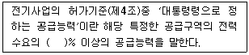
- 30
- 40
- 50
- 60
(정답률: 51%)
68. 다음 그림에서 태양광 어레이의 각 스트링의 개방전압 측정방법으로 틀린 것은?(오류 신고가 접수된 문제입니다. 반드시 정답과 해설을 확인하시기 바랍니다.)
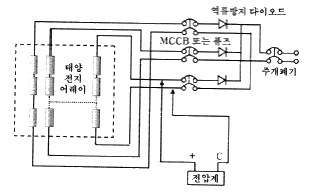
- 접속함의 출력개폐기를 Off한다.
- 각 모듈이 음영에 영향을 받지 않는지 확인한다.
- 접속함의 각 스트링 단로 스위치를 모두 On한다.
- 측정을 시행하는 스트링의 단로 스위치만 Off한다.
(정답률: 60%)
69. 정기점검에 따른 배전반 점검 항목이 아닌 것은?
- 가스 압력계
- 리미터 스위치
- 명판과 표시물
- 제어회로 단자부
(정답률: 62%)
70. 일상점검 시 축전지의 육안점검 항목으로 틀린 것은?
- 통풍
- 변형
- 팽창
- 변색
(정답률: 72%)
71. 안전장비의 정기점검 관리 보관 요령으로 틀린 것은?
- 세척한 후에 그늘진 곳에 보관할 것
- 청결하고 습기가 없는 장소에 보관할 것
- 보호구 사용 후에는 손질하여 항상 깨끗이 보관할 것
- 한 달에 한번 이상 책임 있는 감독자가 점검할 것
(정답률: 67%)
72. 괄호 안에 들어갈 절연저항 값은 몇 ㏁인가?(관련 규정 개정전 문제로 여기서는 기존 정답인 2번을 누르면 정답 처리됩니다. 자세한 내용은 해설을 참고하세요.)
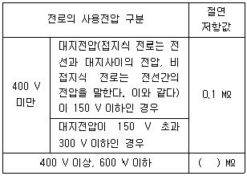
- 0.3
- 0.4
- 0.5
- 0.6
(정답률: 64%)
73. 송전설비 보수점검 작업 시 점검 전 유의사항이 아닌 것은?
- 무전압 상태확인 및 안전조치
- 차단기 1차 측의 통전 유무를 확인
- 점검 시 안전을 위하여 접지선을 제거
- 작업 주변의 정리, 설비 및 기계의 안전 확인
(정답률: 73%)
74. 충전부 작업 중에 접지면을 절연시켜 인체가 통전 경로가 되지 않도록 하기 위해 사용하는 고무판의 사용범위가 아닌 것은?
- 절연내력 시험 시
- 노출충전부가 있는 배전반 및 스위치 조작 시
- 배전반 내에서의 계전기, 모선 등의 점검, 보수 작업 시
- 정지된 회전기의 정류자면, 브러시면을 점검, 조정 작업 시
(정답률: 58%)
75. 태양광 어레에 회로의 전로 사용전압이 150 V 초과 300 V 이하인 경우 절연저항 값은 몇 ㏁ 이상이어야 하는가?
- 0.1
- 0.2
- 0.3
- 0.4
(정답률: 65%)
76. 성능평가를 위한 측정요소 중 설치코스트 평가방법으로 가장 옳은 것은?
- 설치시설의 분류
- 설치시설의 지역
- 설치각도와 방위
- 인버터 설치 단가
(정답률: 59%)
77. 전기설비의 운전 · 조작에 관한 설명으로 틀린 것은?
- 전기안전관리자는 비상재해 발생 시를 대비하여 비상연락망을 구축한다.
- 전기안전관리자는 전기설비의 운전·조작 또는 이에 대한 업무를 수행하여야 한다.
- 전기안전관리자는 전기설비의 운전·조작 또는 이에 대한 업무를 감독하여야 한다.
- 전기안전관리자는 부재 등의 사유로 전기설비의 운전·조작할 수 없을 경우 안전관리 교육을 받은 자 중 1명을 지정할 수 있다.
(정답률: 59%)
78. 성능평가를 위한 측정요소에서 신뢰성 평가·분석 항목 중 시스템 트러블에 해당하지 않는 것은?
- 직류지락
- 인버터 정지
- 계통지락
- 컴퓨터 전원의 차단
(정답률: 72%)
79. 인버터 입출력회로 절연저항 측정 시 주의사항에 관한 설명 중 틀린 것은?
- 트랜스리스 인버터의 경우는 제조업자가 추천하는 방법에 따라 측정한다.
- 측정할 때는 서지 업서버 등 정격에 약한 회로에 관해서는 회로에서 분리시킨다.
- 입출력 단자에 주회로 이외의 제어단자 등이 있는 경우는 이것을 포함해서 측정한다.
- 정격전압이 입출력에서 다를 때는 낮은 측의 전압을 절연저항계의 선택기준으로 한다.
(정답률: 67%)
80. 태양광발전시스템의 청소 시 유의사항으로 틀린 것은?
- 절연물은 충전부 간을 가로지르는 방향으로 청소한다.
- 문, 커버 등을 열기 전에는 주변의 먼지나 이물질을 제거한다.
- 청소걸레는 마른걸레를 사용하되 젖은 걸레를 사용하는 경우 산성인 것을 사용한다.
- 컴프레셔를 이용하여 공압을 사용하는 진공청소기를 이용한 흡입방식을 사용하고, 토출방식은 공기의 압력에 유의한다.
(정답률: 80%)
5과목: 임의 구분
81. 전기설비기술기준의 판단기준에서 상주 감시를 하지 아니하는 변전소의 변전제어소 또는 기술원이 상주하는 장소에 경보장치를 시설하는 경우로서 틀린 것은?
- 제어 회로의 전압이 현저히 저하한 경우
- 주요 변압기의 전원측 전로가 무전압으로 된 경우
- 특고압용 타냉식변압기는 그 냉각장치가 고장 난 경우
- 출력 500kVA 초과하는 특고압 변압기의 온도가 현저히 상승한 경우
(정답률: 41%)
82. 전기판매사업자는 대통령령으로 정하는 바에 따라 전기요금과 그 밖의 공급조건에 관한 약관을 작성하여 누구의 인가를 받아야 하는가?
- 전기위원회위원장
- 전력거래소장
- 기획재정부장관
- 산업통상자원부장관
(정답률: 71%)
83. 전기설비기술기준에서 저압전선로 중 절연부분의 전선과 대지 사이 및 전선의 심선 상호 간의 절연저항은 사용전압에 대한 누설전류가 최대 공급전류의 얼마를 넘지 않도록 하영야 하는가?
- 1/100
- 1/500
- 1/1000
- 1/2000
(정답률: 73%)
84. 안전공사 및 전기안전관리대행사업자가 안전관리업무를 대행할 수 있는 전기설비의 규모가 아닌 것은? (문제 오류로 실제 시험에서는 모두 정답처리 되었습니다. 여기서는 1번을 누르면 정답 처리 됩니다.)
- 용량 300킬로와트 미만의 발전설비
- 용량 1천킬로와트 미만의 전기수용설비
- 용량 600킬로와트 미만의 태양광 발전설비
- 용량 500킬로와트 미만의 비상용 예비발전설비
(정답률: 69%)
85. 전기설비기술기준에서 고압 및 특고압 전로의 피뢰기 시설 위치가 아닌 것은?
- 가공전선로와 지중전선로가 접속되는 곳
- 발전소·변전소 또는 이에 준하는 장소의 가공전선 인입구 및 인출구
- 고압 또는 특고압의 지중전선로부터 공급을 받는 수용 장소의 인입구
- 가공전선로(25kV) 이하의 중성점 다중접지식 특고압 가공전선로를 제외한다)에 접속하는 배전용 변압기의 고압측 및 특고압측
(정답률: 46%)
86. 연면적 1천제곱미터 이상의 신축·증축 또는 개축하는 건축물을 대상으로 예상 에너지 사용량에 대한 2018년도 신·재생엔지의 공급의무비율(%)은?
- 18
- 21
- 24
- 27
(정답률: 48%)
87. 신·재생에너지 발전사업자가 신·재생에너지의 기술개발 및 이용·보급에 필요한 사업을 원활히 수행하기 위하여 가입하는 「엔지니어링산업 진흥법」제34조에 따른 공제조합이 공제사업을 할 경우 정하는 공제규정에 대한 내용으로 틀린 것은?
- 공제사업의 범위
- 공제계약의 내용
- 공제금 및 공제료
- 공제계약 위반 시 범칙금
(정답률: 64%)
88. 전기설비기술기준의 판단기준에서 지중전선로를 직접 매설식에 의하여 시설하는 경우 차량 기타 중량물의 압력을 받을 우려가 있는 장소의 매설 깊이는 몇 m 이상인가?
- 0.8
- 1.2
- 1.4
- 1.6
(정답률: 73%)
89. 전기설비기술기준의 판단기준에서 고압용 또는 특고압용 기계기구의 철대 및 금속제 외함(외함이 없는 변압기 또는 계기용변성기는 철심) 접지공사의 종류는?
- 제1종 접지공사
- 제2종 접지공사
- 제3종 접지공사
- 특별 제3종 접지공사
(정답률: 49%)
90. 한국전력거래소는 전력시장 및 전력계통의 운영에 관한 규칙을 정하여야 한다. 전력시장운영규칙에 포함되지 않는 내용은?
- 전력거래방법에 관한 사항
- 전력거래 시 REC 가격 변동 사항
- 전력거래의 정산·결제에 관한 사항
- 전력량계의 설치 및 계량 등에 관한 사항
(정답률: 44%)
91. 정부가 신·재생에너지의 기술개발 및 이용·보급의 촉진에 관한 시책을 마련하여 자발적인 신·재생에너지 기술개발 및 이용·보급을 장려하고 보호 육성하여야 하는 대상이 아닌 것은?
- 기업체
- 공공기관
- 해외기관
- 지방자치단체
(정답률: 80%)
92. 신·재생에너지 설비 설치 의무기관으로 대통령령으로 정하는 금액 이상을 출연한 정부출연기관에서 “대통령령으로 정하는 금액 이상” 이란 최소 연간 얼마 이상을 말하는가?
- 40억원
- 50억원
- 60억원
- 70억원
(정답률: 69%)
93. 전기설비기술기준의 판단기준에서 발전소 등의 울타리·담 등의 시설 기준에 대한 설명 중 틀린 것은?
- 울타리·담 등의 높이는 2m 이상으로 할 것
- 지표면과 울타리·담 등의 하단사이의 간격은 20cm 이하로 할 것
- 출입구에는 출입금지 표시 및 자물쇠 등 기타 적당한 장치를 할 것
- 35kV 이하 전압에서는 울타리·담 등의 높이와 울타리·담 등으로부터 충전부분까지의 거리의 합계는 5m 이상일 것
(정답률: 56%)
94. 전시설비기술기준의 판단기준에서 저압전로에 시설하는 보호 장치의 확실한 동작을 확보하기 위하여 특히 필요한 경우에 전로의 중점에 접지공사를 할 경우 접지선의 공칭단면적은 몇 mm2 이상의 연동선으로 사용하여야 하는가?
- 4
- 6
- 10
- 16
(정답률: 57%)
95. 다음 중 신에너지 해당되지 않는 것은?
- 수소에너지
- 태양에너지
- 연료전지
- 석탄을 액화·가스화한 에너지
(정답률: 60%)
96. 전기설비기술기준의 판단기준에서 분산형전원을 계통 연계하는 경우 전력계통의 단락용량이 전선의 순시허용전류를 상회할 우려가 있을 때에 시설해야 하는 장치로 가장 옳은 것은?
- 지락차단기
- 영상변류기
- 한류리액터
- 과전류차단기
(정답률: 56%)
97. 온실가스 배출량 및 에너지 소비량에 관한 명세서를 작성할 때 포함되는 사항이 아닌 것은?
- 명세서에 관한 품질관리 절차
- 온실가스 감축·흡수·제거 실적
- 업체의 규모, 생산설비, 제품원료 및 생산량
- 생산공정과 생산설비로 구분한 온실가스 배출량·종류 및 규모
(정답률: 45%)
98. 전기공사업법에서 공사업자가 아니어도 도급 받거나 시공할 수 있는 대통령령으로 정하는 경미한 전기공사가 아닌 것은?
- 특고압 차단기 및 변압기 교체공사
- 전력량계 또는 퓨즈를 부착하거나 떼어내는 공사
- 꽂음접속기, 소켓, 로제트, 실링블록, 접속기, 전구류, 나이프스위치, 그 밖에 개폐기의 보수 및 교환에 관한 공사
- 벨, 인터폰, 장식전구, 그 밖에 이와 비슷한 시설에 사용되는 소형변압기(2차측 전압 36볼트 이하의 것으로 한정한다)의 설치 및 그 2차측 공사
(정답률: 72%)
99. 정부는 지속가능발전과 관련된 국제적 합의를 성실히 이행하고, 국가의 지속가능발전을 촉진하기 위하여 몇 년을 계획기간으로 하는 지속 가능발전 기본계획을 5년마다 수립·시행하여야 하는가?
- 10
- 20
- 30
- 50
(정답률: 54%)
100. 공급인증기관이 제정하는 공급인증서 발급 및 거래시장 운영에 관한 규칙 사항이 아닌 것은?
- 공급인증서의 거래방법에 관한 사항
- 공급인증서 가격의 결정방법에 관한 사항
- 신·재생에너지 사용량의 증명에 관한 사항
- 공급인증서 거래의 정산 및 결제에 관한 사항
(정답률: 57%)